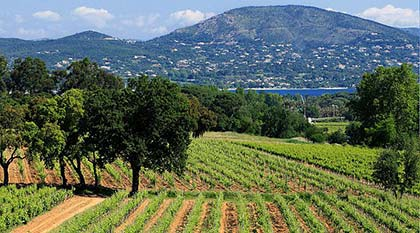
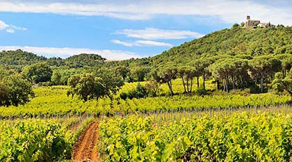

-
Wine is an alcoholic beverage
Wine has a rich history dating back thousands of years, with the earliest production so far discovered having occurred c. 6000 BC in Georgia.
It had reached the Balkans by c. 4500 BC and was consumed and celebrated in ancient Greece and Rome.
Best wines for you From its earliest appearance in written records, wine has also played an important role in
Impulsion wine Wine has a rich history dating back thousands of years, with the earliest production so far discovered
-
Terroirs and Grape Varietals
The vineyards of Château Minuty are remarkably situated with outstanding exposition on the slopes of the villages of Gassin and Ramatuelle, overlooking the Bay of St Tropez.
Château Minuty is surrounded by 45 Ha of continuous vineyards on chalky schist soils, completed with 20 Ha on chalky soils and another 15Ha on the slopes of Val de Rians in Ramatuelle with a magnificent view of the Bay of Pamplona
 An execeptionnal site The vineyards in Ramatuelle are directly influenced by the sea with a south-east aspect.
These 75 hectares of vines benefit from a temperate maritime climate. The sea breezes dry the vines after morning dew or rain and contribute to reducing the risks of disease.
-
About Wine region
The blocks exposed south-west are blessed with generous sunshine and are dedicated to the red wines with Shiraz and Mourvèdre. The calcareous slopes which are stonier allow a more mineral expression and were therefore planted with Rolle
As for the reds, they are produced from Shiraz and Mourvèdre, the grape varietal that is so at home here on the schist soils along the coast.
 Some title Example text... in Ramatuelle are directly influenced by the sea with a south-east aspect.
Other title some text of vines benefit from a temperate maritime climate. The sea breezes dry the ..example text.